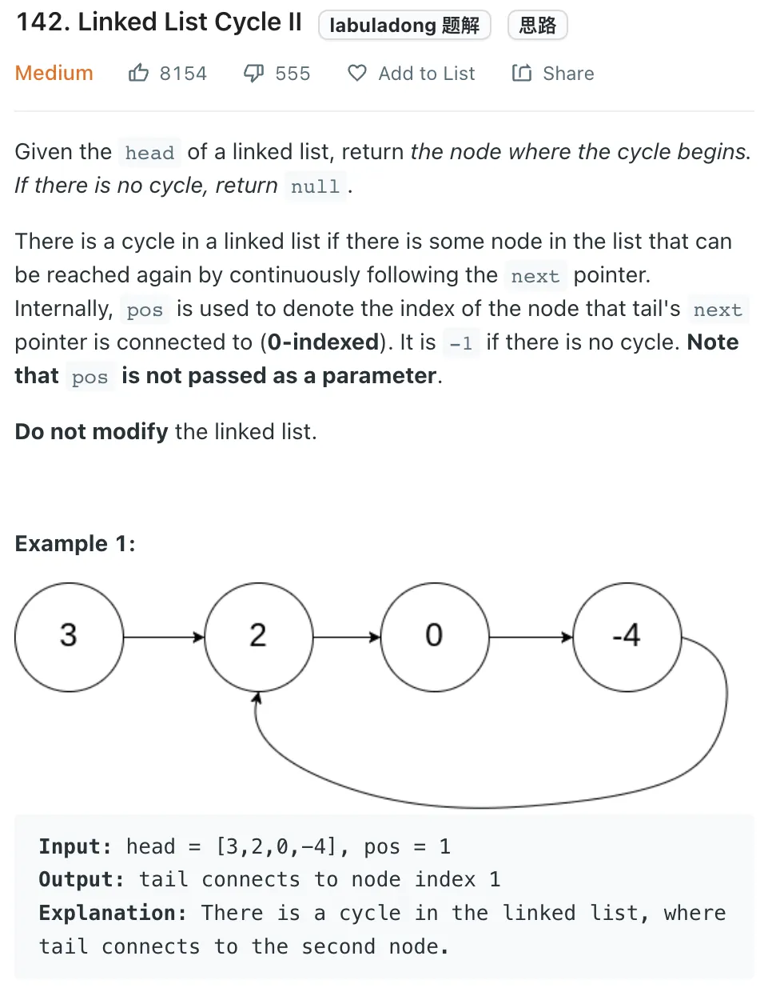
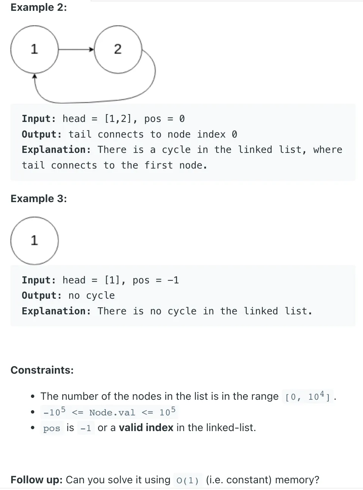

142. Linked List Cycle II
Question


✍🏽 My Solution
Solution #1 [快慢指針]
public class Solution {
public ListNode detectCycle(ListNode head) {
if (head == null) return null;
ListNode fast = head;
ListNode slow = head;
while (fast != null && fast.next != null) {
slow = slow.next;
fast = fast.next.next;
if (slow == fast) {
break;
}
}
// fast 遇到空指针说明没有环
if (fast == null || fast.next == null) {
return null;
}
slow = head;
// 两个指针，从头结点和相遇结点，各走一步，直到相遇，相遇点即为环入口
while (slow != fast) {
fast = fast.next;
slow = slow.next;
}
return slow;
}
}
Explanation (in my words)
- What is the space/time complexity of their solution?
- time: O(n)
- space: O(1)
Solution #2 [HashSet]
Runtime: 6 ms, faster than 16.89% of Java online submissions for Linked List Cycle II.
Memory Usage: 46.7 MB, less than 5.06% of Java online submissions for Linked List Cycle II.
public class Solution {
public ListNode detectCycle(ListNode head) {
if (head == null) return null;
HashSet<ListNode> set = new HashSet<>();
while (head != null) {
if (set.contains(head)) {
return head;
} else {
set.add(head);
}
head = head.next;
}
return null;
}
}
Explanation (in my words)
- How does their solution work?
- 用HashSet確認是否有環，如果有，說明現在遍歷到的指針就是環的交叉口，直接返回
- 否則就繼續往後遍歷加入HashSet
- What is the space/time complexity of their solution?
- time: O(n)
- space: O(n)